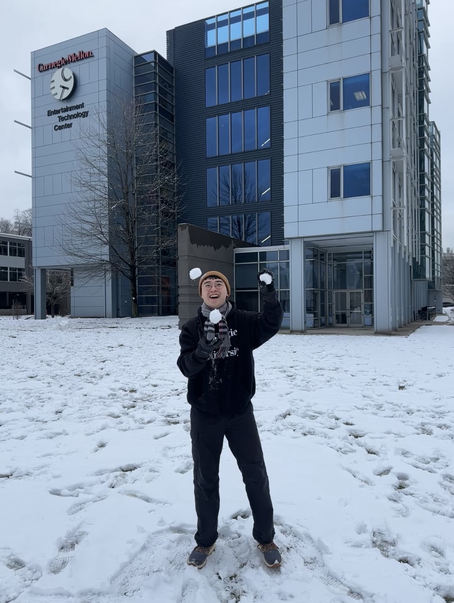

Game developer
I’m a game developer who likes making ideas happen. Engineering taught me to break big problems into small steps, and board games taught me how a working core mechanic can support a whole system.
That’s why I design toy first: I start with something fun to play with, get the core right, then build outward and watch what people do with it. Their reactions are my favorite part of the job, and they’re why I keep looking for new ways for people to interact. I often want to be the first to see something new actually happen, so I build it myself: breathing as game input, smart shoes, a machine learning game bot, combat driven by audio, and a lot more fun stuff.
Keep scrolling: the whole table is yoursThis toy is better played on a PC